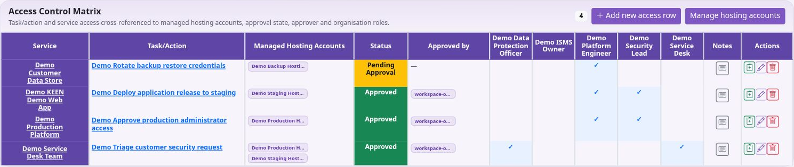
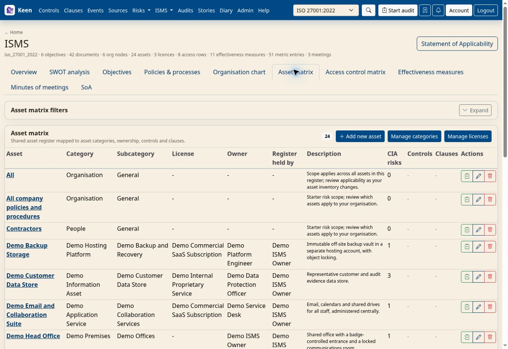

Using KEEN
People, assets and access
Chapter 11 of 16
People, suppliers and assets
Four registers describe who and what your management system covers: the organisation chart, people, vendors and assets, with an access matrix that records who should be able to reach what. This chapter builds them in the order that keeps their links valid.

Organisation chart, people, vendors and assets
Build the organisation chart
In ISMS → Organisation Chart, create a node with a name, type, optional parent, users and description, and associate the relevant controls and clauses. Parents represent your hierarchy; zoom and reset help with larger charts. Keep roles and people distinct, so a personnel change does not erase what a role means.
Maintain the People directory
In People & vendors → People, record a name, optional e-mail and position, an optional KEEN account and organisation role, the assets or devices used, and notes. A person does not need a login.
Select the person, then add assurance records: screening, training, policy acknowledgement and the like. Each record carries a category, requirement, status, completion and expiry dates, an authoritative source, an evidence link and notes. Review records as they near expiry; the screening or training itself happens through the responsible team or provider.
Connect suppliers to assets
In Vendors, record the supplier’s name, description, website, contact and the assets it supplies. An asset has one supplying vendor, so assigning it to a new vendor moves the relationship; check the current supplier before saving. Supplier risks and evidence belong in the risk and evidence records.
Maintain the asset matrix
In ISMS → Asset Matrix, enter the asset, its category and subcategory, a licence where applicable, the owner, the Register held by relationship, a description and the relevant controls and clauses. Category, subcategory and licence lists have their own forms. Ownership and organisational responsibility are different from who is currently using a device.
The asset detail page shows its relationships and changelog, and Sample into audit where available. When equipment moves or a service retires, update the asset’s risks, supplier and people together.
Record access responsibilities
The Access Control Matrix records a task or action, the service, managed hosting accounts, status, who approved it, the roles and notes. Add a hosting-account record first if needed, link the intended roles and note the approval basis. Compare the matrix with real upstream permissions during access reviews.
The matrix records intention. Grant and revoke access in the external service itself, and keep passwords and API keys in your secret store, never in these records. Application Configuration records document context in the same spirit.
Maintain a connected asset register
The Asset Matrix and the assets used by risk assessments are the same records. Create an asset once and select it in risks, supplier records and personnel relationships. An asset can be a device, an information set, a service or an agreed group; say which in its description.

- Keep the organisation chart current first: an asset’s owner and register custodian are links to its nodes.
- In ISMS → Asset Matrix, create or edit the asset’s name and description, choose a category and a subcategory that belongs to it, and a licence where applicable.
- Set Owner (who is responsible for the asset) and Register held by (who maintains its inventory information).
- Link controls and clauses in the selected framework, save, and check the links and changelog on the detail page.
- In People and Vendors, associate the asset with its people and supplier. In Risks, select the existing asset for the assessments that concern it.
- When the asset changes, review its risks, users, supplier and controls together. A name change never needs a duplicate asset.
Example. Create “Staff laptops” with a description of which devices it covers, an IT ownership node and a register custodian. Link the endpoint controls, the supplier and the people, and use the asset in a loss or theft risk. In an audit, sample the asset together with real endpoint evidence; the register entry alone only shows what was recorded.